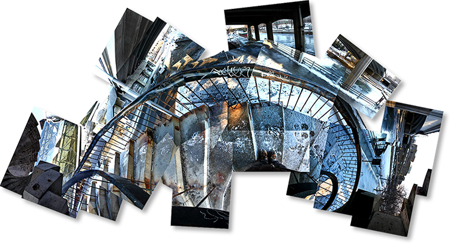
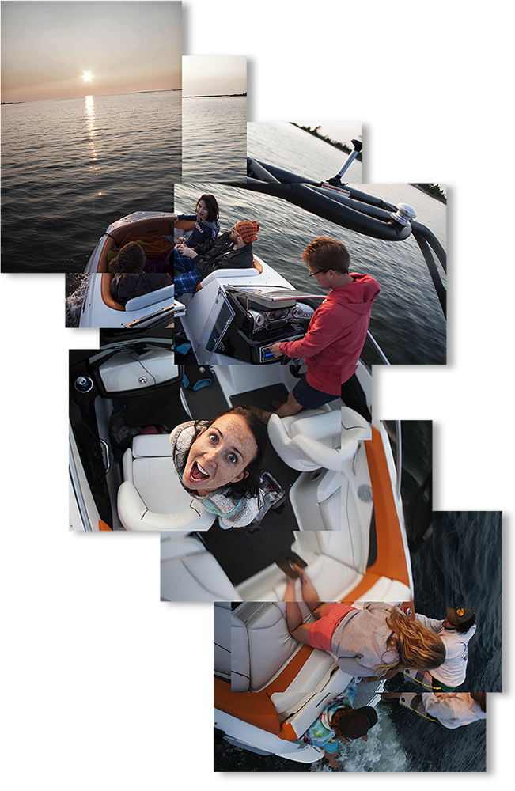
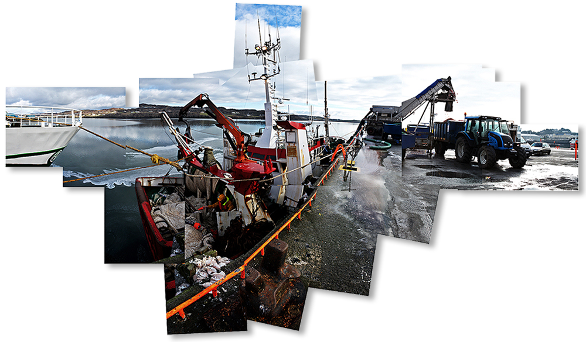
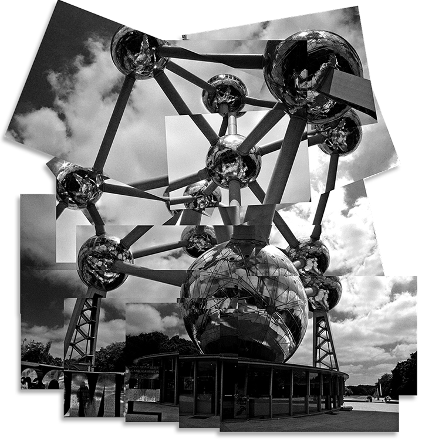
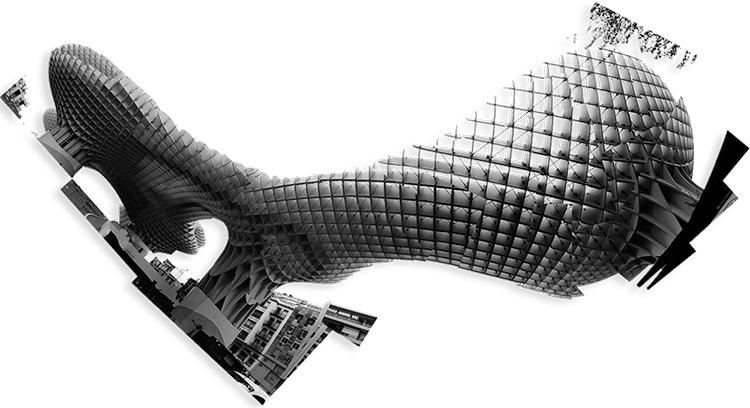
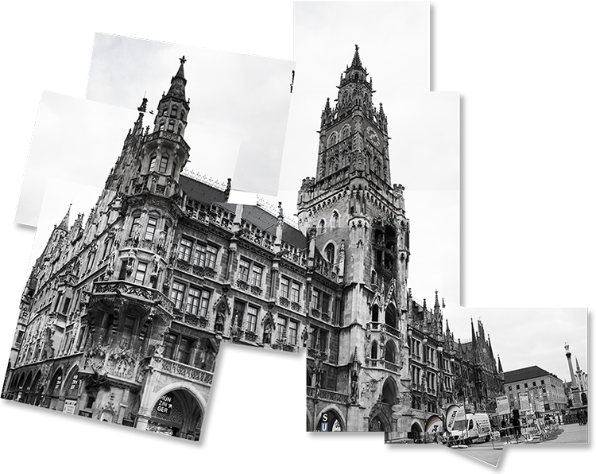
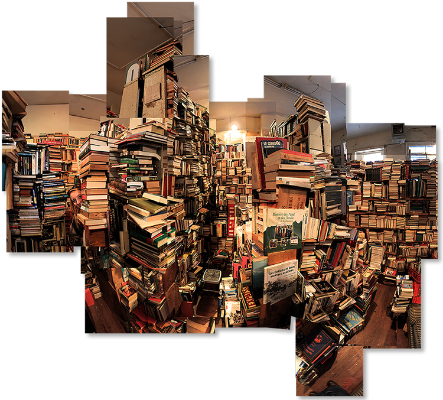
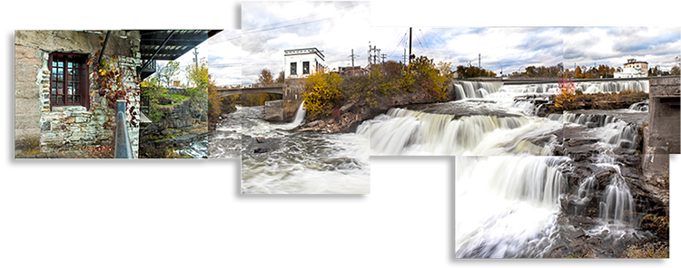

PHOTOGRAPHY
This is a collection of photos from my travels and places I have lived. I've got some city and landscape shots from Canada and Europe as well as my special photo-montage section













